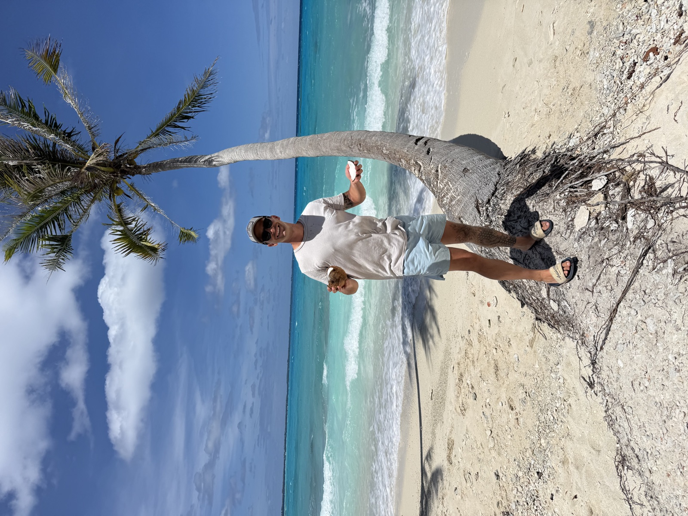
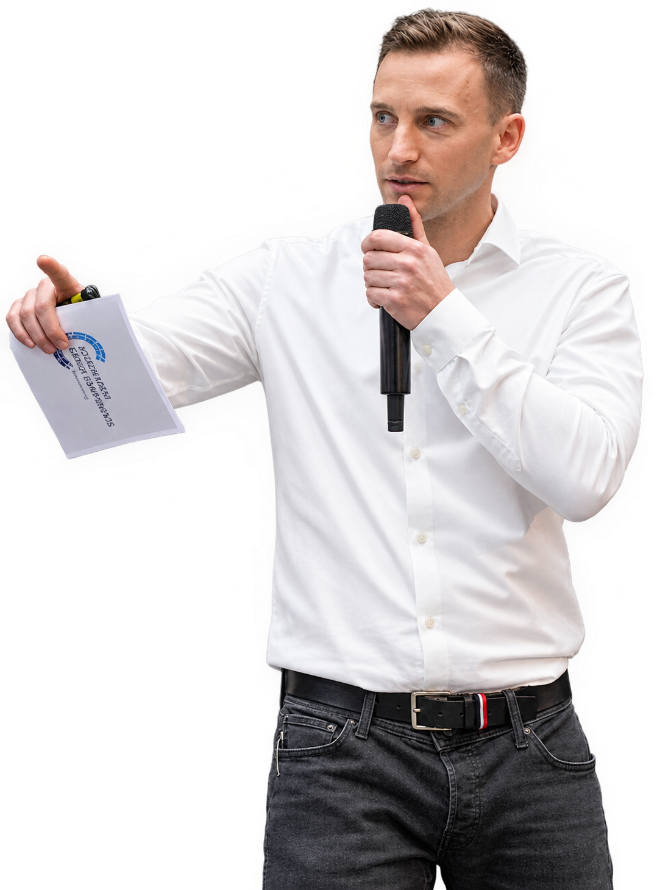
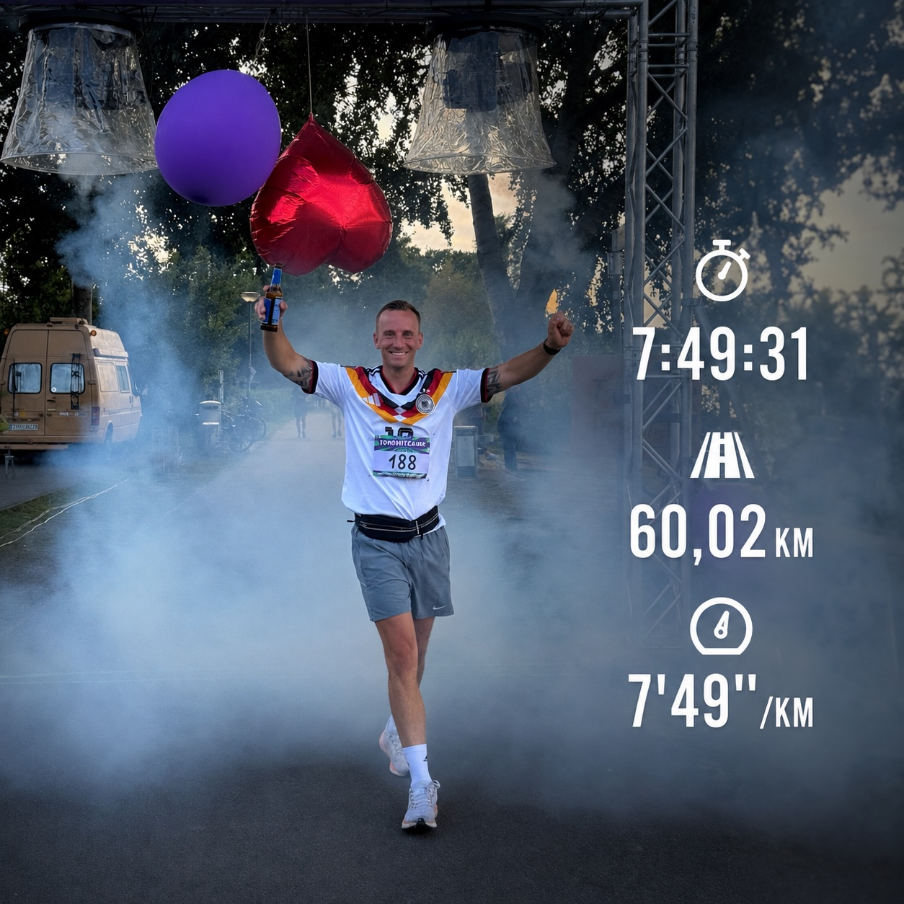

Reisen, Tauchen & Angeln
Neue Orte entdecken, die Natur erleben und außergewöhnliche Eindrücke sammeln – besonders beim Reisen und Tauchen. Auch das Angeln bietet für mich einen Ausgleich und die Möglichkeit, Zeit draußen zu verbringen.


„Ich verbinde fundierte Industrie- und Projekterfahrung mit einer ausgeprägten Begeisterung für Digitalisierung und KI – mit dem Ziel, Prozesse durch innovative Lösungen nachhaltig zu verbessern.“
Volkswagen AG
Technische Grundausbildung mit dem Fokus auf Mechanik, Elektrotechnik und Informationstechnik. Erwerb praktischer Kenntnisse in der SPS- und Robotikprogrammierung sowie industrieller Steuerungstechnik.
Teutloff Bildungszentrum, Braunschweig · Berufsbegleitend
Weiterbildung zum staatlich geprüften Techniker der Fachrichtung Maschinentechnik mit Schwerpunkten in Industrial Engineering, Projektmanagement, Informationstechnik und Betriebswirtschaft. Vertiefung technischer und wirtschaftlicher Kenntnisse sowie der Planung und Optimierung von Produktionsprozessen.
Fachhochschule des Mittelstands (FHM), Hannover · Berufsbegleitend
Vertiefung meiner technischen Kompetenzen in der Maschinentechnik und Ausbau meiner betriebswirtschaftlichen Kenntnisse. Verbindung von Technik und Wirtschaft mit Fokus auf industrielle Prozesse, Wirtschaftlichkeit und unternehmerische Zusammenhänge.
Volkswagen AG
Anlagenführung in der Großserienfertigung von Dämpfern mit fundierten Kenntnissen der Fertigungs- und Anlagentechnik. Überwachung der Produktionsprozesse sowie Sicherstellung eines störungsfreien und effizienten Anlagenbetriebs.
Volkswagen AG
Durchführung technischer Fehleranalysen mit unterschiedlichen Messverfahren sowie systematische Ursachenidentifikation und Ableitung geeigneter Korrekturmaßnahmen.
Volkswagen AG
Stellvertretende Leitung des Mess- und Analyselabors mit Verantwortung für die Prüfung und Freigabe von Prüftechnik. Leitung eines Qualitätsprojekts zur Umsetzung der Anforderungen der DIN EN ISO 9001.
Volkswagen AG
Teilnahme am unternehmensinternen Talenteprogramm zur fachlichen und persönlichen Weiterentwicklung.
Volkswagen AG
Mitwirkung an der strategischen Portfoliosteuerung und Vorbereitung von Managemententscheidungen. Leitung fachbereichsübergreifender Produktkostenworkshops zur Verbesserung der Wirtschaftlichkeit sowie Koordination zwischen Produktmanagement, Projektmanagement und Digitalisierung.
Volkswagen AG
Gesamtverantwortung für ein ca. 30 Mio. € umfassendes Industrialisierungsprojekt von Hinterachsen der nächsten Generation – von der Produktentwicklung bis zur Großserienfertigung. Fachbereichsübergreifende Steuerung interdisziplinärer Teams sowie Berichterstattung an zentrale Stakeholder.
Neue Orte entdecken, die Natur erleben und außergewöhnliche Eindrücke sammeln – besonders beim Reisen und Tauchen. Auch das Angeln bietet für mich einen Ausgleich und die Möglichkeit, Zeit draußen zu verbringen.


Sport ist für mich der Ausgleich zum Berufsalltag und eine Möglichkeit, persönliche Grenzen auszuloten. Laufen, Fitness und HYROX verbinden körperliche Leistungsfähigkeit mit Disziplin, Zielorientierung und kontinuierlicher Weiterentwicklung.
Mich interessieren wirtschaftliche Zusammenhänge, die Entwicklung der Finanzmärkte und unterschiedliche Möglichkeiten des langfristigen Vermögensaufbaus. Besonders beschäftige ich mich mit Aktien, ETFs und verschiedenen Anlagestrategien.
Ich nutze KI-gestützte Werkzeuge, um eigene digitale Ideen umzusetzen. Dazu gehören die Gestaltung und Entwicklung persönlicher Webseiten sowie die Konzeption und Umsetzung von Apps und digitalen Anwendungen.
Auch diesen persönlichen Lebenslauf als Webseite habe ich mithilfe von Claude Code, VS Code & GitHub eigenständig konzipiert und umgesetzt.